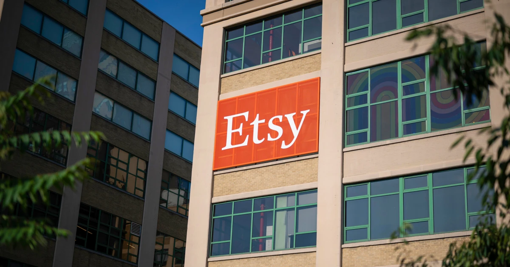

MARKET NEWSROOM
The reporting
behind the signals
A visual source ledger for the selected market, connecting original reporting with the current intelligence view.
LEAD REPORTING
Stories setting the frame
The opening stories in the current regional source set.
GNews · 2026-10-24 06:00:00Z
More than third of post offices in TG Jones stores to shut by early 2027
VIEW STORY ↗Dynamic visual
Barron's · 2026-10-23 13:58:00Z
Micron Stock Leads Chip Rebound. Dip Buyers Must Buckle Up as AI Chaos Swirls. - Barron's
VIEW STORY ↗CNBC · 2026-10-22 22:07:15 UTC
Hackers appear to be struggling to exploit PHP flaws after global cybersecurity crisis
VIEW STORY ↗Dynamic visual
The Wall Street Journal · 2026-10-23 14:01:00Z
Weil Gotshal Loses More Top Lawyers as Merger Talks Collapse - WSJ
VIEW STORY ↗MORE HEADLINES
Follow the reporting
The remaining 45 stories in the current source order.
Headlines 005—016 12 stories
 005
005CNBC · 2026-10-23 12:22:15 UTC
↗006Russian diesel tanker heads to the U.S., the first since Trump’s deal with Putin
Bloomberg · 2026-10-24 16:31:00 UTC
↗007French Protesters Dispersed with Gas as Tensions Rise
GNews · 2026-10-24 06:00:00Z
↗008Asia's most favorite island expects to receive 2.4 million foreign tourists in 2026
CNBC · 2026-10-23 13:25:09Z
↗American Express is cutting 5% of its workforce to 'prepare for AI' - CNBC
 009
009Bloomberg · 2026-10-24 11:39:37 UTC
↗010Oil Markets Brace for Renewed Iran Fighting
GNews · 2026-10-24 05:35:46Z
↗011Reliance Jio Platforms IPO allotment status check online by PAN number on NSE India, BSE websites: Direct link, steps
Yahoo Entertainment · 2026-10-23 16:09:40Z
↗Stock market today: Dow, S&P 500 drop, Nasdaq rises after sharp tech sell-off - Yahoo Finance
 012
012Bloomberg · 2026-10-24 12:55:03 UTC
↗013Russian Diesel Deal Confronts Legal Uncertainty
Bloomberg · 2026-10-24 04:41:29 UTC
↗014Kenya Records Second Ebola Death as Uganda Restricts Transit
Bloomberg · 2026-10-24 14:03:23 UTC
↗015How This County Made the Data Center Boom Pay Off
Barron's · 2026-10-23 14:17:00Z
↗016Western Digital Earnings Fail to Get Stock Back on Track - Barron's
Bloomberg · 2026-10-24 17:05:04 UTC
↗Embracing the Bond Market: Masters in Business with Robin Wigglesworth
Headlines 017—028 12 stories
017 024
024
Bloomberg · 2026-10-24 14:08:54 UTC
↗018Dalmore Said to Express Interest in Cinven-Owned UK Supplier JLA
Bloomberg · 2026-10-24 11:54:12 UTC
↗019Gershkovich Says Putin Seeks His Terms, Not a Deal
Yahoo Entertainment · 2026-10-23 12:54:11Z
↗020Meta stock pares losses in pre-market trading following yesterday's 7% decline - Yahoo Finance
Bloomberg · 2026-10-24 13:38:29 UTC
↗021By The Way: Headlines You May Have Missed
CNBC · 2026-10-22 15:09:46 UTC
↗022Markets tumble as concerns about Iran war and high AI spending collide
Bloomberg · 2026-10-24 12:23:42 UTC
↗023France Faces New Protests After Week of Violence
GNews · 2026-10-24 05:30:00Z
↗The world-famous royal UK town slowly being destroyed by 'dodgy' high street shops
024Bloomberg · 2026-10-24 14:45:05 UTC
↗025Metals Traders Reap Bonanza With Another Year of Record Profits
CNBC · 2026-10-22 13:22:20 UTC
↗026Money Conversations at Every Age: What to Discuss by Generation
GNews · 2026-10-24 05:46:28Z
↗027OpenAI Nears $1.25 Trillion Valuation. What That Tells Investors Ahead of a Potential 2027 IPO.
GNews · 2026-10-24 05:31:00Z
↗028Travelling this bank holiday weekend? There's major disruption to train and bus services
GNews · 2026-10-24 05:46:45Z
↗India's Scotch probe of Diageo, Pernod undermining India-UK pact benefits: Report
Headlines 029—040 12 stories
029 030
030 038
038
Bloomberg · 2026-10-24 14:36:22 UTC
↗The Real Medical Detective Who Inspired Sherlock Holmes
030Associated Press · 2026-10-23 15:19:00Z
↗031US designates helium as a critical material, citing its importance for semiconductors - AP News
GNews · 2026-10-24 06:00:00Z
↗032‘It’s part of our history’: can the menú del día survive Spain’s changing eating habits?
Bloomberg · 2026-10-24 14:30:00 UTC
↗033Venezuela to Restart a Crucial Power Plant With China’s Help
CNBC · 2026-10-23 20:50:52 UTC
↗034The Dallas Cowboys cheerleaders are unionizing
GNews · 2026-10-24 06:00:00Z
↗035Can a £5.8bn scheme help revive Grimsby and other town centres?
Barron's · 2026-10-23 13:49:00Z
↗036SK Hynix Stock Jumps After Scrapping U.S. IPO of Memory-Chip Unit - Barron's
Yahoo Entertainment · 2026-10-23 15:16:32Z
↗King Apple is taking Wall Street’s top spot back from Nvidia — for the fifth time - Yahoo Finance

037CNBC · 2026-10-23 14:39:40 UTC
↗Etsy to restrict AI-generated content in effort to combat seller slop
038Bloomberg · 2026-10-24 07:48:56 UTC
↗039Indonesia Begins Trimming Pipeline Gas Exports to Singapore
GNews · 2026-10-24 06:01:00Z
↗040New £300 rule for England homes without driveways now in force
CNBC · 2026-10-22 17:18:34 UTC
↗Airbnb hosts can no longer ask guests to clean dishes or make beds
Headlines 041—049 9 stories
041
CNBC · 2026-10-22 08:00:40 UTC
↗042On Main Street, Goldman Sachs makes a big bet on AI
Bloomberg · 2026-10-24 15:21:35 UTC
↗043‘Total Meltdown’ in Riskiest Debt Unnerves Market: Credit Weekly
Bloomberg · 2026-10-24 13:53:29 UTC
↗044Inside Gershkovich’s 16 Months in Russian Prisons
Bloomberg · 2026-10-24 13:29:52 UTC
↗045HR Navigates AI and a Changing Workplace
Bloomberg · 2026-10-24 15:57:32 UTC
↗046New Middle East Threats, Russian Diesel Coming to US
Bloomberg · 2026-10-24 13:19:00 UTC
↗047Persistent Oil Prices Threaten Inflation Outlook
Bloomberg · 2026-10-24 11:02:54 UTC
↗048Barclays ‘House of Fixed Income’ Pins Future Growth on Equities
CNBC · 2026-10-23 18:48:44 UTC
↗049Trump administration cancels some Canada tariffs amid close midterm races
CNBC · 2026-10-22 16:00:01 UTC
↗